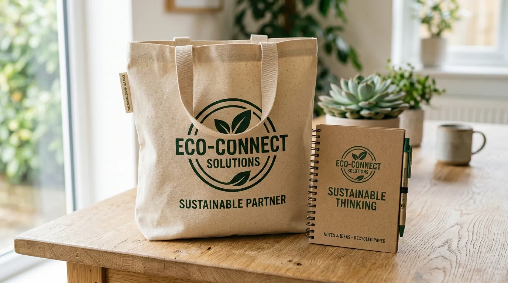
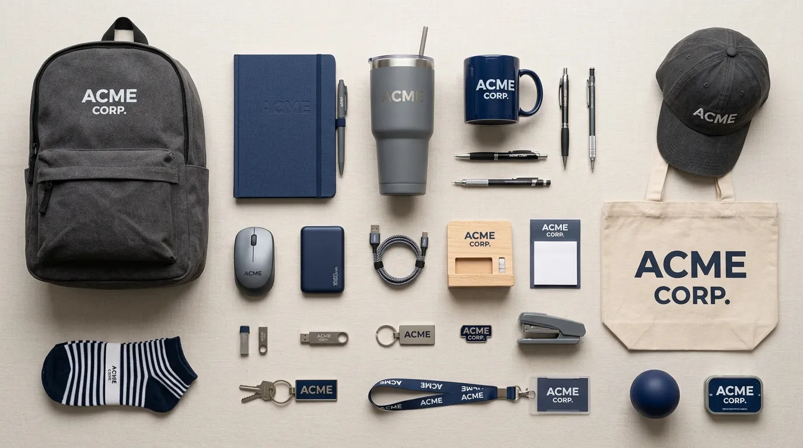

21 Produk Souvenir Kantor Unik yang Cocok Dijadikan Merchandise Resmi Perusahaan
 Nazhima Nadine (Nad)
3 Agustus 2026
6 Menit Baca
Nazhima Nadine (Nad)
3 Agustus 2026
6 Menit Baca

Terdapat beragam produk souvenir kantor unik yang cocok dijadikan merchandise resmi perusahaan, mulai dari perlengkapan kerja, aksesoris digital, hingga barang gaya hidup, yang dapat disesuaikan dengan kebutuhan branding dan target penerimanya. Kualitas cetakan logo memengaruhi kesan resmi pada setiap produk merchandise.
Terdapat beragam produk souvenir kantor unik yang cocok dijadikan merchandise resmi perusahaan, mulai dari perlengkapan kerja, aksesoris digital, hingga barang gaya hidup, yang dapat disesuaikan dengan kebutuhan branding dan target penerimanya. Produk merchandise resmi umumnya dikelompokkan berdasarkan fungsi dan target penerima. Perlengkapan kerja tetap menjadi kategori paling banyak dipilih karena kepraktisannya. Aksesoris digital semakin diminati seiring meningkatnya kebutuhan teknologi kerja. Produk ramah lingkungan menjadi tren yang terus berkembang di kalangan perusahaan. Kualitas cetakan logo memengaruhi kesan resmi pada setiap produk merchandise.
Apa yang Membedakan Merchandise Resmi dengan Souvenir Biasa?
Merchandise resmi perusahaan berbeda dari souvenir biasa karena dirancang dengan standar identitas visual yang konsisten, melalui proses persetujuan desain resmi, dan biasanya digunakan sebagai representasi citra perusahaan secara berkelanjutan, bukan sekadar hadiah sesaat.
Souvenir biasa cenderung dipilih secara praktis tanpa mempertimbangkan konsistensi visual jangka panjang, sedangkan merchandise resmi memiliki panduan desain yang jelas, termasuk penempatan logo, kombinasi warna, dan jenis material yang telah disesuaikan dengan pedoman brand perusahaan. Hal ini membuat merchandise resmi lebih terstruktur dan dapat digunakan secara konsisten di berbagai jenis acara maupun kebutuhan internal.

Kategori Perlengkapan Kerja
Kategori perlengkapan kerja adalah kelompok produk yang berkaitan langsung dengan aktivitas kerja sehari-hari, sehingga memiliki tingkat penggunaan yang tinggi dan cocok dijadikan merchandise resmi perusahaan.
- 1 Notebook custom logo perusahaan
- 2 Pulpen premium dengan ukiran nama atau logo
- 3 Organizer meja kerja multifungsi
- 4 Sticky note set dengan desain brand
- 5 Map dokumen custom logo
- 6 Kalender meja tahunan bertema perusahaan
- 7 Tempat kartu nama dengan finishing elegan
Produk dalam kategori ini umumnya dipilih karena fungsinya yang mendukung aktivitas kerja harian, sehingga peluang penggunaannya secara berulang cukup tinggi. Semakin sering digunakan, semakin besar pula eksposur identitas brand kepada penerima maupun orang di sekitarnya.
Kategori Aksesoris Digital
Kategori aksesoris digital mencakup produk yang mendukung kebutuhan perangkat elektronik penerima, sejalan dengan gaya kerja masa kini yang semakin bergantung pada teknologi.
- 8 Power bank dengan cetak logo
- 9 Kabel data multifungsi custom warna brand
- 10 Wireless charger desain minimalis
- 11 Stand smartphone dan laptop
- 12 Mouse pad dengan motif brand
- 13 Speaker portabel mini custom logo
- 14 Casing laptop atau sleeve custom desain
Produk aksesoris digital dinilai relevan karena mengikuti kebutuhan nyata penerima yang semakin sering menggunakan perangkat elektronik dalam aktivitas kerja maupun pribadi, sehingga barang jenis ini memiliki peluang penggunaan yang cukup konsisten dalam jangka panjang.
Kategori Produk Ramah Lingkungan
Kategori produk ramah lingkungan menjadi kelompok yang semakin banyak dipilih perusahaan sebagai bentuk komitmen terhadap isu keberlanjutan sekaligus memperkuat citra positif brand.
- 15 Tumbler stainless custom logo
- 16 Tas kanvas custom desain brand
- 17 Sedotan stainless set dengan pouch custom
- 18 Notebook dari kertas daur ulang
Pemilihan produk ramah lingkungan tidak hanya berdampak pada citra perusahaan, tetapi juga memberikan nilai tambah fungsional bagi penerima yang semakin memperhatikan gaya hidup berkelanjutan dalam aktivitas sehari-hari.
Kategori Barang Gaya Hidup
Kategori barang gaya hidup mencakup produk yang dapat digunakan penerima di luar konteks kerja, sehingga memperluas jangkauan eksposur brand ke berbagai aktivitas sehari-hari.
- 19 Tas ransel custom logo perusahaan
- 20 Jaket atau outerwear dengan bordir logo
- 21 Payung lipat custom warna dan logo brand
Produk gaya hidup memiliki keunggulan karena dapat digunakan penerima dalam berbagai situasi, tidak terbatas pada lingkungan kantor saja, sehingga identitas brand berpotensi terlihat oleh lebih banyak orang di luar lingkup internal perusahaan.
Bagaimana Memilih Produk yang Tepat dari Daftar Ini?
Cara memilih produk yang tepat dari daftar merchandise di atas dilakukan dengan menyesuaikan kategori produk terhadap tujuan pemberian, target penerima, serta anggaran yang telah ditetapkan perusahaan.
Untuk Produktivitas Kerja Karyawan
Jika tujuannya adalah mendukung produktivitas kerja karyawan, kategori perlengkapan kerja dan aksesoris digital menjadi pilihan yang paling relevan karena penggunaannya berkaitan langsung dengan aktivitas harian di kantor.
Untuk Membangun Citra Brand yang Lebih Luas
Sementara itu, jika tujuannya adalah membangun citra brand yang lebih luas kepada klien atau publik, kategori barang gaya hidup dapat menjadi pilihan yang lebih strategis karena jangkauan penggunaannya tidak terbatas pada lingkungan kerja saja.
Pertimbangan Anggaran
Pertimbangan anggaran juga tetap perlu diperhatikan dengan menyesuaikan jumlah produk yang dibutuhkan terhadap kisaran harga masing-masing kategori, agar proses pengadaan merchandise dapat berjalan secara efisien tanpa mengurangi kualitas kesan yang ingin ditampilkan.
Butuh Merchandise Resmi untuk Perusahaan Anda?
Konsultasikan kebutuhan produk souvenir kantor unik sebagai merchandise resmi perusahaan dengan tim kami untuk mendapatkan rekomendasi terbaik.
Konsultasi SekarangKesimpulan
Terdapat banyak pilihan produk souvenir kantor unik yang dapat dijadikan merchandise resmi perusahaan, mulai dari perlengkapan kerja, aksesoris digital, produk ramah lingkungan, hingga barang gaya hidup. Pemilihan kategori yang tepat perlu disesuaikan dengan tujuan pemberian, target penerima, dan anggaran yang tersedia, agar merchandise yang dihasilkan benar-benar efektif memperkuat citra dan identitas perusahaan secara berkelanjutan.
FAQ Seputar Produk Souvenir Kantor Unik